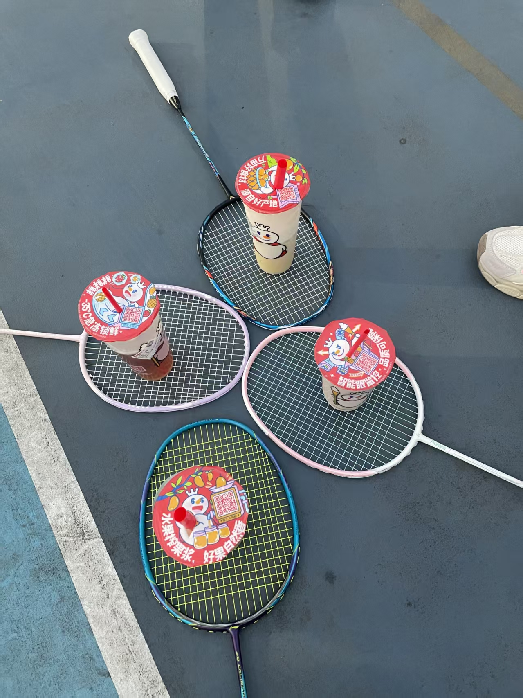
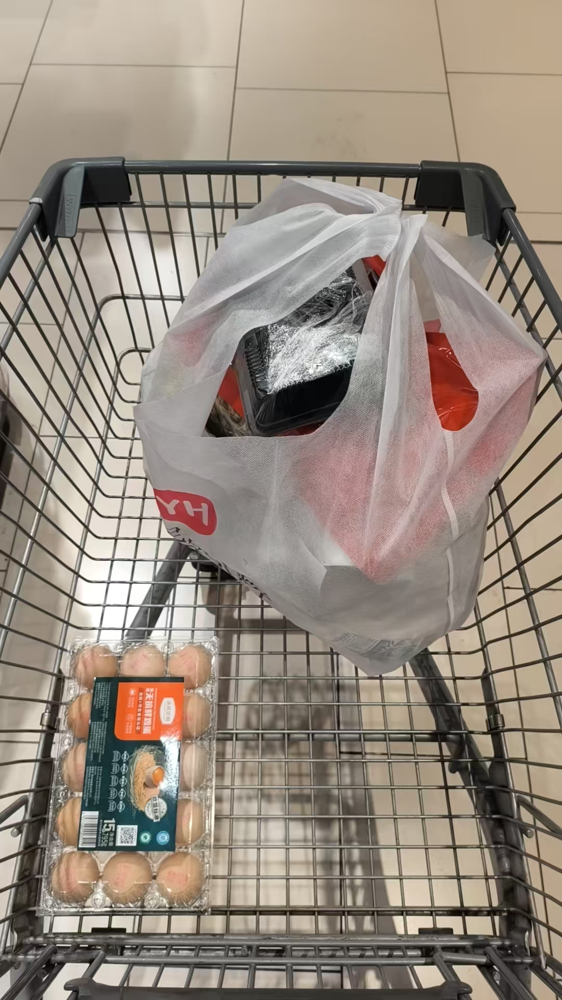
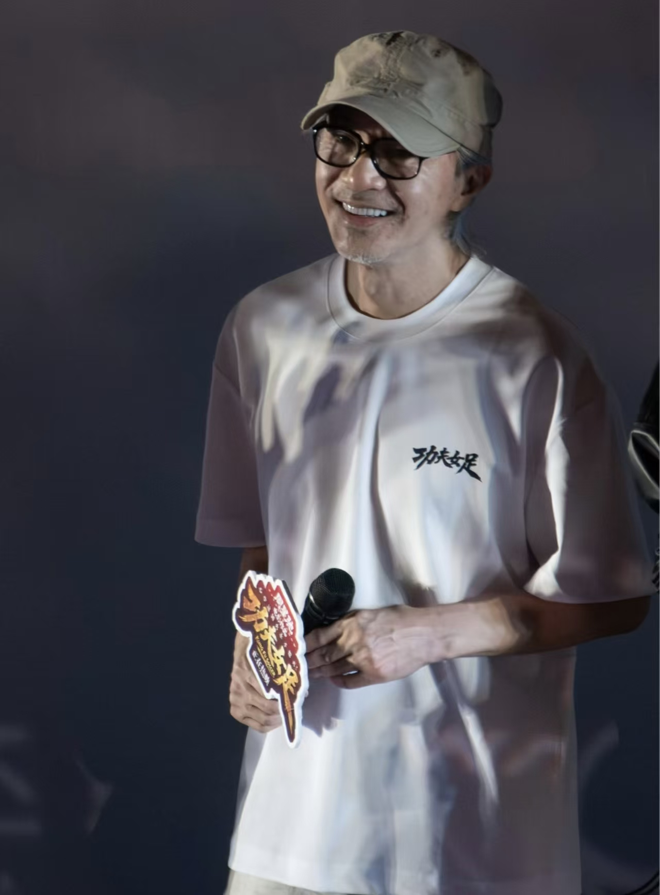

工作之外的另外一半的我——音乐、运动、生活里的小确幸。
四根弦的小乐器，是最容易获得快乐的方式。和弦按错也没关系——弹的就是一个开心。最享受的时刻，是忙碌一天后抱着它随便扫几个和弦，什么都不想。

出出汗、追着球跑，是解压最快的方式。喜欢每一拍来回的节奏感——像极了做事情的状态：专注、反应、再来一球。
从断断续续的音符到完整的一段旋律，钢琴教会我的是「慢练」。它是与尤克里里完全不同的体验——更安静、更专注，也更需要耐心。

不只是买东西——更是把城市当展览馆逛：新开的咖啡店、路过的书店、橱窗里的搭配灵感。用脚步丈量一座城市的烟火气。

好剧是别人的故事，也是自己的镜子。悬疑让我思考，温情让我放松——认真追剧也是一种「输入」，跟读书一样值得。
世界上最治愈的小生物。看它们打个哈欠、追个毛线球，一天的疲惫就没了——吸猫十分钟，快乐一整天。